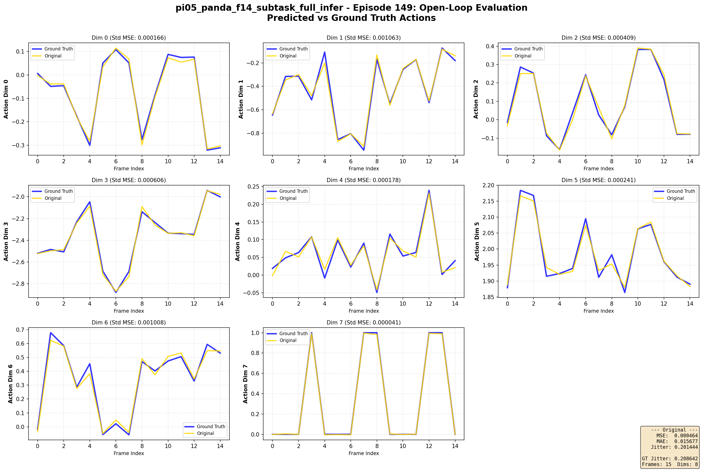

시드 1000
성공빨강 제외 · 3/3 투입 · 18.53초
FRANKA PANDA · π₀.₅ · CLOSED-LOOP ROLLOUTS
텔레옵 시연 198개로 전체 미세조정한 Panda π₀.₅ Subtask 10k의 평가입니다. 지정된 한 색을 남기고 나머지 세 블록을 그릇에 넣습니다.
Panda Subtask · 10,000 step빨강 제외 · 3/3 투입 · 18.53초
파랑 제외 · 3/3 투입 · 17.07초
초록 제외 · 3/3 투입 · 24.53초
노랑 제외 · 3/3 투입 · 17.87초
빨강 제외 · 3/3 투입 · 23.27초
파랑 제외 · 3/3 투입 · 15.73초
초록 제외 · 3/3 투입 · 16.40초
노랑 제외 · 3/3 투입 · 17.13초
빨강 제외 · 3/3 투입 · 17.80초
파랑 제외 · 3/3 투입 · 16.80초
초록 제외 · 3/3 투입 · 16.27초
노랑 제외 · 3/3 투입 · 16.53초
빨강 제외 · 3/3 투입 · 17.53초
파랑 제외 · 3/3 투입 · 20.27초
초록 제외 · 3/3 투입 · 15.07초
노랑 제외 · 3/3 투입 · 15.53초
빨강 제외 · 3/3 투입 · 17.27초
파랑 제외 · 3/3 투입 · 17.07초
초록 제외 · 3/3 투입 · 21.47초
노랑 제외 · 3/3 투입 · 22.60초
두 카메라와 관절 상태를 동기화하고, 전체 지시문으로 매 요청마다 subtask를 생성했습니다. 절대 관절 위치 50개 중 16개를 15 Hz로 실행한 뒤 새 관측을 입력했습니다. 시뮬레이션은 최대 120초이며 성공 상태를 1초간 유지해야 합니다.
| 시드 | 금지색 | 결과 | 대상 블록 투입 | 시뮬레이션 시간 |
|---|---|---|---|---|
| 1000 | 빨강 | 성공 | 3/3 | 18.53초 |
| 1001 | 파랑 | 성공 | 3/3 | 17.07초 |
| 1002 | 초록 | 성공 | 3/3 | 24.53초 |
| 1003 | 노랑 | 성공 | 3/3 | 17.87초 |
| 1004 | 빨강 | 성공 | 3/3 | 23.27초 |
| 1005 | 파랑 | 성공 | 3/3 | 15.73초 |
| 1006 | 초록 | 성공 | 3/3 | 16.40초 |
| 1007 | 노랑 | 성공 | 3/3 | 17.13초 |
| 1008 | 빨강 | 성공 | 3/3 | 17.80초 |
| 1009 | 파랑 | 성공 | 3/3 | 16.80초 |
| 1010 | 초록 | 성공 | 3/3 | 16.27초 |
| 1011 | 노랑 | 성공 | 3/3 | 16.53초 |
| 1012 | 빨강 | 성공 | 3/3 | 17.53초 |
| 1013 | 파랑 | 성공 | 3/3 | 20.27초 |
| 1014 | 초록 | 성공 | 3/3 | 15.07초 |
| 1015 | 노랑 | 성공 | 3/3 | 15.53초 |
| 1016 | 빨강 | 성공 | 3/3 | 17.27초 |
| 1017 | 파랑 | 성공 | 3/3 | 17.07초 |
| 1018 | 초록 | 성공 | 3/3 | 21.47초 |
| 1019 | 노랑 | 성공 | 3/3 | 22.60초 |
학습 시연 4개를 16프레임 간격으로 읽고 첫 예측 동작을 비교했습니다. 관측 69개의 관절 위치 RMSE는 0.0195 rad이며 그리퍼 열림·닫힘은 69/69개가 일치했습니다.


